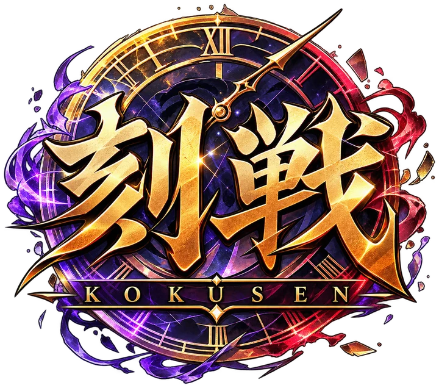

刻戦
曲 ON
音 ON

TAP TO START
画面をタップ
👥
✉
🏆
⚙
プレイ
CPU戦・ソロ・オンライン対人
📖 ルールブック
🎖 称号一覧
🎰 ガチャ
音楽:
なぐもりずの音楽室
(南雲莉翠) ・
◀ タイトルへ
👥
🏆
🎖
対戦相手
ベーシック
アドバンス
CPUの強さ
CPUのキャラ
おまかせ
自分で選ぶ
ステージ
ランク戦
フリー戦
部屋に入る
観戦する
出る
相手を探す
キャラを選ぶ ▶
◀ 戻る
★ マイセット
あなたのパーティ
CPUのパーティ
出す順に3枚選ぶ
長押しで詳細
?
VS
?
手を選んでください
ログを見る
リタイア
キャラ選択に戻る
続けて【始】に挑む
音楽:
なぐもりずの音楽室
(南雲莉翠)
閉じる
アカウント
閉じる
🎲 お試しガチャ
キャラは手に入りません
スキップ ▶▶
TAP
全部めくる
OK